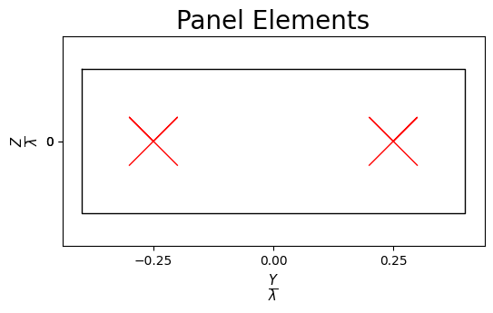

[1]:
import numpy as np
from neoradium import AntennaElement,AntennaPanel, CsiReport
from neoradium import Carrier, PDSCH, Grid, CsiRsConfig, CsiRsSet, CdlChannel
[2]:
carrier = Carrier(startRb=0, numRbs=52, spacing=15)
bwp = carrier.bwps[0]
bwp.print()
bwp.symbolLens.sum()
Bandwidth Part Properties:
Resource Blocks: 52 RBs starting at 0 (624 subcarriers)
Subcarrier Spacing: 15 KHz
CP Type: normal
bandwidth: 9360000 Hz
symbolsPerSlot: 14
slotsPerSubFrame: 1
nFFT: 1024
[2]:
16384
[3]:
# Create 3 NZP CsiRsSet objects in the CsiRsConfig. All of them are NZP, transmitted on first symbol
# of the slot (Symbol 0), use 4 ports, and occupy REs (0,1,2,3), (4,5,6,7), and (8,9,10,11) correspondingly.
csiRsConfig = CsiRsConfig([CsiRsSet("NZP", bwp, symbols=[0], freqMap=fm, numPorts=4) for fm in
["001", "010", "100"]]) # Different freq. maps for each CsiRsSet
# csiRsConfig.print()
# Create a grid and put CSI-RS info inside the grid:
grid = bwp.createGrid(csiRsConfig.numPorts)
csiRsConfig.populateGrid(grid)
# Grid Stats:
print("Grid Stats:")
stats = grid.getStats()
for key, value in stats.items(): print(" %s: %d"%(key, value))
# Visualize the grid:
# grid.drawMap(ports=range(csiRsConfig.numPorts), reRange=(0,36))
Grid Stats:
GridSize: 34944
UNASSIGNED: 33696
CSIRS_NZP: 1248
[4]:
# Create an antenna panel using default antenna element template.
txAntenna = AntennaPanel([1,2], polarization="x")
txAntenna.showElements(zeroTicks=True)
txAntenna.shape, txAntenna.getNumElements()
[4]:
(array([1, 2], dtype=int16), 4)

[5]:
# Create a CDL-C channel model with 300ns delay spread, 4GHz carrier frequency, and 5Hz doppler shift
channel = CdlChannel('D', delaySpread=10, carrierFreq=4e9, dopplerShift=10,
txAntenna = txAntenna,
rxAntenna = AntennaPanel([1,2], polarization="+"), # 4 RX antenna
timing="linear") # Nearest Neighbors interpolation (Also try: "Polar", "linear")
print(channel)
CDL-D Channel Properties:
delaySpread: 10 ns
dopplerShift: 10 Hz
carrierFreq: 4000000000.0 Hz
normalizeGains: True
normalizeOutput: True
txDir: Downlink
timing method: linear
coherenceTime: 0.042314 (Sec.)
ueDirAZ: 0°, 90°
pathDelays (ns): 0.0000 0.0000 0.3500 6.1200 13.630 14.050 18.040 25.960 17.750 40.420
79.370 94.240 97.080 125.25
pathPowers (db): -0.200 -13.50 -18.80 -21.00 -22.80 -17.90 -20.10 -21.90 -22.90 -27.80
-23.60 -24.80 -30.00 -27.70
AODs (Degree): 0 0 89 89 89 13 13 13 35 -64 -33 53 -132 77
AOAs (Degree): -180 -180 89 89 89 163 163 163 -137 74 128 -120 -9 -84
ZODs (Degree): 98 98 86 86 86 98 98 98 98 88 91 104 80 86
ZOAs (Degree): 82 82 87 87 87 79 79 79 78 74 78 87 71 73
hasLOS: True
Cross Pol. Power: 11 db
angleSpreads: 5° 8° 3° 3°
TX Antenna:
Total Elements: 4
spacing: 0.5𝜆, 0.5𝜆
shape: 1 rows x 2 columns
polarization: x
taper: 1.0
RX Antenna:
Total Elements: 4
spacing: 0.5𝜆, 0.5𝜆
shape: 1 rows x 2 columns
polarization: +
taper: 1.0
Channel Filter:
filterDelay (samples): 7
numTxAntenna: 4
numPaths: 14
pathDelays (ns): 0.0000 0.0000 0.3500 6.1200 13.630 14.050 18.040 25.960 17.750 40.420
79.370 94.240 97.080 125.25
filterLen: 16
numInterpol: 50
normalize: True
stopBandAtten: 80
[6]:
hActual = channel.getChannelMatrix(bwp, numSlots=1, timeDomain=True)
[7]:
waveForm = grid.ofdmModulate()
print("Waveform Shape:", waveForm.shape)
Waveform Shape: (4, 16384)
[8]:
maxDelay = channel.getMaxDelay()
print("Max. Channel Delay (Samples):",maxDelay)
# Append to the waveForm before passing it through the channel
txWaveform = waveForm.pad(maxDelay)
print("txWaveform Shape:", txWaveform.shape)
# Now apply the channel to the waveform
rxWaveform = channel.applyToSignal(txWaveform)
print("rxWaveform Shape:", txWaveform.shape)
# Add noise: (SNR=10 dB)
noisyWaveForm = rxWaveform.addNoise(snrDb=50, nFFT=bwp.nFFT)
noisyWaveForm.shape
Max. Channel Delay (Samples): 11
txWaveform Shape: (4, 16395)
rxWaveform Shape: (4, 16395)
[8]:
(4, 16395)
[9]:
# We can get channel delay from the channel (This is cheating because we don't know the channel)
chOffset = channel.getTimingOffset(txWaveform.shape[1])
print("Channel Offset from the Channel Model:", chOffset)
# Or estimate the offset using a resource grid with NZP CSI-RS and the recived signal
# Only use NZP resources:
rxCsiRsConfig = CsiRsConfig([csiRsSet for csiRsSet in csiRsConfig.csiRsSetList if csiRsSet.csiType=="NZP"])
csiRsGrid = bwp.createGrid(rxCsiRsConfig.numPorts)
rxCsiRsConfig.populateGrid(csiRsGrid)
offset = csiRsGrid.estimateTimingOffset(noisyWaveForm)
print("Estimated Offset:", offset)
Channel Offset from the Channel Model: 7
Estimated Offset: 7
[10]:
# Now apply the offset to the received waveform
syncedWaveForm = noisyWaveForm.sync(offset)
print("syncedWaveForm Shape:", syncedWaveForm.shape)
syncedWaveForm Shape: (4, 16388)
[11]:
rxGrid = Grid.ofdmDemodulate(bwp, syncedWaveForm)
rxGrid.shape
[11]:
(4, 14, 624)
[12]:
# Least Squares Channel Estimation
hEst, _ = rxGrid.estimateChannelLS(rxCsiRsConfig,kernel="linear")
hEst.shape, hActual.shape
[12]:
((14, 624, 4, 4), (14, 624, 4, 4))
[13]:
print("Min Absolute Error:", np.abs(hActual-hEst).min())
print("Max Absolute Error:", np.abs(hActual-hEst).max())
print("Mean Absolute Error:", np.abs(hActual-hEst).mean())
print("MSE:", np.square(np.abs(hActual-hEst)).mean())
# Print symbol values for the first subcarrier for the first pair of antennas
print("Actual Channel:\n", hActual[:,0,0,0])
print("Estimated Channel:\n", hEst[:,0,0,0])
Min Absolute Error: 4.152077454384459e-06
Max Absolute Error: 0.004140206755751211
Mean Absolute Error: 0.0012053535933496415
MSE: 1.8658583014719393e-06
Actual Channel:
[0.06177877-0.00491705j 0.06175917-0.00506486j 0.06173923-0.00521265j
0.06171894-0.0053604j 0.0616983 -0.00550813j 0.06167732-0.00565583j
0.061656 -0.00580349j 0.06163403-0.00595314j 0.06161201-0.00610074j
0.06158965-0.00624831j 0.06156694-0.00639584j 0.06154389-0.00654333j
0.06152049-0.00669079j 0.06149675-0.00683821j]
Estimated Channel:
[0.06072263-0.00625106j 0.06072263-0.00625106j 0.06072263-0.00625106j
0.06072263-0.00625106j 0.06072263-0.00625106j 0.06072263-0.00625106j
0.06072263-0.00625106j 0.06072263-0.00625106j 0.06072263-0.00625106j
0.06072263-0.00625106j 0.06072263-0.00625106j 0.06072263-0.00625106j
0.06072263-0.00625106j 0.06072263-0.00625106j]
[14]:
idxes = grid.getReIndexes("CSIRS_NZP")
p1Idxes = np.where(idxes[0]==0)[0]
idxes = (idxes[0][p1Idxes], idxes[1][p1Idxes], idxes[2][p1Idxes]) # indexes in 1st port
idxes
[14]:
(array([0, 0, 0, 0, 0, 0, 0, 0, 0, 0, 0, 0, 0, 0, 0, 0, 0, 0, 0, 0, 0, 0,
0, 0, 0, 0, 0, 0, 0, 0, 0, 0, 0, 0, 0, 0, 0, 0, 0, 0, 0, 0, 0, 0,
0, 0, 0, 0, 0, 0, 0, 0, 0, 0, 0, 0, 0, 0, 0, 0, 0, 0, 0, 0, 0, 0,
0, 0, 0, 0, 0, 0, 0, 0, 0, 0, 0, 0, 0, 0, 0, 0, 0, 0, 0, 0, 0, 0,
0, 0, 0, 0, 0, 0, 0, 0, 0, 0, 0, 0, 0, 0, 0, 0, 0, 0, 0, 0, 0, 0,
0, 0, 0, 0, 0, 0, 0, 0, 0, 0, 0, 0, 0, 0, 0, 0, 0, 0, 0, 0, 0, 0,
0, 0, 0, 0, 0, 0, 0, 0, 0, 0, 0, 0, 0, 0, 0, 0, 0, 0, 0, 0, 0, 0,
0, 0, 0, 0, 0, 0, 0, 0, 0, 0, 0, 0, 0, 0, 0, 0, 0, 0, 0, 0, 0, 0,
0, 0, 0, 0, 0, 0, 0, 0, 0, 0, 0, 0, 0, 0, 0, 0, 0, 0, 0, 0, 0, 0,
0, 0, 0, 0, 0, 0, 0, 0, 0, 0, 0, 0, 0, 0, 0, 0, 0, 0, 0, 0, 0, 0,
0, 0, 0, 0, 0, 0, 0, 0, 0, 0, 0, 0, 0, 0, 0, 0, 0, 0, 0, 0, 0, 0,
0, 0, 0, 0, 0, 0, 0, 0, 0, 0, 0, 0, 0, 0, 0, 0, 0, 0, 0, 0, 0, 0,
0, 0, 0, 0, 0, 0, 0, 0, 0, 0, 0, 0, 0, 0, 0, 0, 0, 0, 0, 0, 0, 0,
0, 0, 0, 0, 0, 0, 0, 0, 0, 0, 0, 0, 0, 0, 0, 0, 0, 0, 0, 0, 0, 0,
0, 0, 0, 0]),
array([0, 0, 0, 0, 0, 0, 0, 0, 0, 0, 0, 0, 0, 0, 0, 0, 0, 0, 0, 0, 0, 0,
0, 0, 0, 0, 0, 0, 0, 0, 0, 0, 0, 0, 0, 0, 0, 0, 0, 0, 0, 0, 0, 0,
0, 0, 0, 0, 0, 0, 0, 0, 0, 0, 0, 0, 0, 0, 0, 0, 0, 0, 0, 0, 0, 0,
0, 0, 0, 0, 0, 0, 0, 0, 0, 0, 0, 0, 0, 0, 0, 0, 0, 0, 0, 0, 0, 0,
0, 0, 0, 0, 0, 0, 0, 0, 0, 0, 0, 0, 0, 0, 0, 0, 0, 0, 0, 0, 0, 0,
0, 0, 0, 0, 0, 0, 0, 0, 0, 0, 0, 0, 0, 0, 0, 0, 0, 0, 0, 0, 0, 0,
0, 0, 0, 0, 0, 0, 0, 0, 0, 0, 0, 0, 0, 0, 0, 0, 0, 0, 0, 0, 0, 0,
0, 0, 0, 0, 0, 0, 0, 0, 0, 0, 0, 0, 0, 0, 0, 0, 0, 0, 0, 0, 0, 0,
0, 0, 0, 0, 0, 0, 0, 0, 0, 0, 0, 0, 0, 0, 0, 0, 0, 0, 0, 0, 0, 0,
0, 0, 0, 0, 0, 0, 0, 0, 0, 0, 0, 0, 0, 0, 0, 0, 0, 0, 0, 0, 0, 0,
0, 0, 0, 0, 0, 0, 0, 0, 0, 0, 0, 0, 0, 0, 0, 0, 0, 0, 0, 0, 0, 0,
0, 0, 0, 0, 0, 0, 0, 0, 0, 0, 0, 0, 0, 0, 0, 0, 0, 0, 0, 0, 0, 0,
0, 0, 0, 0, 0, 0, 0, 0, 0, 0, 0, 0, 0, 0, 0, 0, 0, 0, 0, 0, 0, 0,
0, 0, 0, 0, 0, 0, 0, 0, 0, 0, 0, 0, 0, 0, 0, 0, 0, 0, 0, 0, 0, 0,
0, 0, 0, 0]),
array([ 0, 1, 4, 5, 8, 9, 12, 13, 16, 17, 20, 21, 24,
25, 28, 29, 32, 33, 36, 37, 40, 41, 44, 45, 48, 49,
52, 53, 56, 57, 60, 61, 64, 65, 68, 69, 72, 73, 76,
77, 80, 81, 84, 85, 88, 89, 92, 93, 96, 97, 100, 101,
104, 105, 108, 109, 112, 113, 116, 117, 120, 121, 124, 125, 128,
129, 132, 133, 136, 137, 140, 141, 144, 145, 148, 149, 152, 153,
156, 157, 160, 161, 164, 165, 168, 169, 172, 173, 176, 177, 180,
181, 184, 185, 188, 189, 192, 193, 196, 197, 200, 201, 204, 205,
208, 209, 212, 213, 216, 217, 220, 221, 224, 225, 228, 229, 232,
233, 236, 237, 240, 241, 244, 245, 248, 249, 252, 253, 256, 257,
260, 261, 264, 265, 268, 269, 272, 273, 276, 277, 280, 281, 284,
285, 288, 289, 292, 293, 296, 297, 300, 301, 304, 305, 308, 309,
312, 313, 316, 317, 320, 321, 324, 325, 328, 329, 332, 333, 336,
337, 340, 341, 344, 345, 348, 349, 352, 353, 356, 357, 360, 361,
364, 365, 368, 369, 372, 373, 376, 377, 380, 381, 384, 385, 388,
389, 392, 393, 396, 397, 400, 401, 404, 405, 408, 409, 412, 413,
416, 417, 420, 421, 424, 425, 428, 429, 432, 433, 436, 437, 440,
441, 444, 445, 448, 449, 452, 453, 456, 457, 460, 461, 464, 465,
468, 469, 472, 473, 476, 477, 480, 481, 484, 485, 488, 489, 492,
493, 496, 497, 500, 501, 504, 505, 508, 509, 512, 513, 516, 517,
520, 521, 524, 525, 528, 529, 532, 533, 536, 537, 540, 541, 544,
545, 548, 549, 552, 553, 556, 557, 560, 561, 564, 565, 568, 569,
572, 573, 576, 577, 580, 581, 584, 585, 588, 589, 592, 593, 596,
597, 600, 601, 604, 605, 608, 609, 612, 613, 616, 617, 620, 621]))
[ ]:
[15]:
csiReport = CsiReport(bwp=bwp, csiRsConfig=rxCsiRsConfig, codebookType="Type1SP",
codebookMode=1, txAntenna=txAntenna)
[18]:
self = csiReport
def removeNeighbors(idx):
# idx is the 2D indexes (port removed). It is a tuple (x, y).
# We have a CSI-RS RE at symbol x[i], and subcarrier y[i].
# We want to use only one RE for a set of Neighboring REs (i.e. the ones in the same CDM group)
bmp = np.ones((idx[0].max()+3,idx[1].max()+3),dtype=np.int8)*2
bmp[(idx[0]+1,idx[1]+1)] = 1
x,y = np.where(bmp[:,1:]-bmp[:,:-1]!=-1)
bmp[ (x,y+1) ] = 2
x,y = np.where(bmp[1:,:]-bmp[:-1,:]!=-1)
bmp[ (x+1,y) ] = 2
x,y = np.where(bmp==1)
return (x-1,y-1)
csiRsGrid = self.bwp.createGrid(self.numPorts)
self.csiRsConfig.populateGrid(csiRsGrid)
csiRsIndexes = grid.getReIndexes("CSIRS_NZP") # A tuple of (ports, symbols, subcarriers)
p0Idx = np.where(csiRsIndexes[0]==0)[0] # Indexes in the csiRsIndexes corresponding to port 0
csiRsIndexesP0 = (idxes[1][p1Idxes], idxes[2][p1Idxes]) # A tuple of (symbols, subcarriers) corresponding to port 0
csiRsIndexesP0
[18]:
(array([0, 0, 0, 0, 0, 0, 0, 0, 0, 0, 0, 0, 0, 0, 0, 0, 0, 0, 0, 0, 0, 0,
0, 0, 0, 0, 0, 0, 0, 0, 0, 0, 0, 0, 0, 0, 0, 0, 0, 0, 0, 0, 0, 0,
0, 0, 0, 0, 0, 0, 0, 0, 0, 0, 0, 0, 0, 0, 0, 0, 0, 0, 0, 0, 0, 0,
0, 0, 0, 0, 0, 0, 0, 0, 0, 0, 0, 0, 0, 0, 0, 0, 0, 0, 0, 0, 0, 0,
0, 0, 0, 0, 0, 0, 0, 0, 0, 0, 0, 0, 0, 0, 0, 0, 0, 0, 0, 0, 0, 0,
0, 0, 0, 0, 0, 0, 0, 0, 0, 0, 0, 0, 0, 0, 0, 0, 0, 0, 0, 0, 0, 0,
0, 0, 0, 0, 0, 0, 0, 0, 0, 0, 0, 0, 0, 0, 0, 0, 0, 0, 0, 0, 0, 0,
0, 0, 0, 0, 0, 0, 0, 0, 0, 0, 0, 0, 0, 0, 0, 0, 0, 0, 0, 0, 0, 0,
0, 0, 0, 0, 0, 0, 0, 0, 0, 0, 0, 0, 0, 0, 0, 0, 0, 0, 0, 0, 0, 0,
0, 0, 0, 0, 0, 0, 0, 0, 0, 0, 0, 0, 0, 0, 0, 0, 0, 0, 0, 0, 0, 0,
0, 0, 0, 0, 0, 0, 0, 0, 0, 0, 0, 0, 0, 0, 0, 0, 0, 0, 0, 0, 0, 0,
0, 0, 0, 0, 0, 0, 0, 0, 0, 0, 0, 0, 0, 0, 0, 0, 0, 0, 0, 0, 0, 0,
0, 0, 0, 0, 0, 0, 0, 0, 0, 0, 0, 0, 0, 0, 0, 0, 0, 0, 0, 0, 0, 0,
0, 0, 0, 0, 0, 0, 0, 0, 0, 0, 0, 0, 0, 0, 0, 0, 0, 0, 0, 0, 0, 0,
0, 0, 0, 0]),
array([ 0, 1, 4, 5, 8, 9, 12, 13, 16, 17, 20, 21, 24,
25, 28, 29, 32, 33, 36, 37, 40, 41, 44, 45, 48, 49,
52, 53, 56, 57, 60, 61, 64, 65, 68, 69, 72, 73, 76,
77, 80, 81, 84, 85, 88, 89, 92, 93, 96, 97, 100, 101,
104, 105, 108, 109, 112, 113, 116, 117, 120, 121, 124, 125, 128,
129, 132, 133, 136, 137, 140, 141, 144, 145, 148, 149, 152, 153,
156, 157, 160, 161, 164, 165, 168, 169, 172, 173, 176, 177, 180,
181, 184, 185, 188, 189, 192, 193, 196, 197, 200, 201, 204, 205,
208, 209, 212, 213, 216, 217, 220, 221, 224, 225, 228, 229, 232,
233, 236, 237, 240, 241, 244, 245, 248, 249, 252, 253, 256, 257,
260, 261, 264, 265, 268, 269, 272, 273, 276, 277, 280, 281, 284,
285, 288, 289, 292, 293, 296, 297, 300, 301, 304, 305, 308, 309,
312, 313, 316, 317, 320, 321, 324, 325, 328, 329, 332, 333, 336,
337, 340, 341, 344, 345, 348, 349, 352, 353, 356, 357, 360, 361,
364, 365, 368, 369, 372, 373, 376, 377, 380, 381, 384, 385, 388,
389, 392, 393, 396, 397, 400, 401, 404, 405, 408, 409, 412, 413,
416, 417, 420, 421, 424, 425, 428, 429, 432, 433, 436, 437, 440,
441, 444, 445, 448, 449, 452, 453, 456, 457, 460, 461, 464, 465,
468, 469, 472, 473, 476, 477, 480, 481, 484, 485, 488, 489, 492,
493, 496, 497, 500, 501, 504, 505, 508, 509, 512, 513, 516, 517,
520, 521, 524, 525, 528, 529, 532, 533, 536, 537, 540, 541, 544,
545, 548, 549, 552, 553, 556, 557, 560, 561, 564, 565, 568, 569,
572, 573, 576, 577, 580, 581, 584, 585, 588, 589, 592, 593, 596,
597, 600, 601, 604, 605, 608, 609, 612, 613, 616, 617, 620, 621]))
[19]:
csiRsIndexesP0 = removeNeighbors(csiRsIndexesP0)
csiRsIndexesP0
[19]:
(array([0, 0, 0, 0, 0, 0, 0, 0, 0, 0, 0, 0, 0, 0, 0, 0, 0, 0, 0, 0, 0, 0,
0, 0, 0, 0, 0, 0, 0, 0, 0, 0, 0, 0, 0, 0, 0, 0, 0, 0, 0, 0, 0, 0,
0, 0, 0, 0, 0, 0, 0, 0, 0, 0, 0, 0, 0, 0, 0, 0, 0, 0, 0, 0, 0, 0,
0, 0, 0, 0, 0, 0, 0, 0, 0, 0, 0, 0, 0, 0, 0, 0, 0, 0, 0, 0, 0, 0,
0, 0, 0, 0, 0, 0, 0, 0, 0, 0, 0, 0, 0, 0, 0, 0, 0, 0, 0, 0, 0, 0,
0, 0, 0, 0, 0, 0, 0, 0, 0, 0, 0, 0, 0, 0, 0, 0, 0, 0, 0, 0, 0, 0,
0, 0, 0, 0, 0, 0, 0, 0, 0, 0, 0, 0, 0, 0, 0, 0, 0, 0, 0, 0, 0, 0,
0, 0]),
array([ 0, 4, 8, 12, 16, 20, 24, 28, 32, 36, 40, 44, 48,
52, 56, 60, 64, 68, 72, 76, 80, 84, 88, 92, 96, 100,
104, 108, 112, 116, 120, 124, 128, 132, 136, 140, 144, 148, 152,
156, 160, 164, 168, 172, 176, 180, 184, 188, 192, 196, 200, 204,
208, 212, 216, 220, 224, 228, 232, 236, 240, 244, 248, 252, 256,
260, 264, 268, 272, 276, 280, 284, 288, 292, 296, 300, 304, 308,
312, 316, 320, 324, 328, 332, 336, 340, 344, 348, 352, 356, 360,
364, 368, 372, 376, 380, 384, 388, 392, 396, 400, 404, 408, 412,
416, 420, 424, 428, 432, 436, 440, 444, 448, 452, 456, 460, 464,
468, 472, 476, 480, 484, 488, 492, 496, 500, 504, 508, 512, 516,
520, 524, 528, 532, 536, 540, 544, 548, 552, 556, 560, 564, 568,
572, 576, 580, 584, 588, 592, 596, 600, 604, 608, 612, 616, 620]))
[24]:
hAtCsiRs = hActual[csiRsIndexesP0]
hAtCsiRs.shape
[24]:
(156, 4, 4)
[25]:
csiRsIndexesP0
[25]:
(array([0, 0, 0, 0, 0, 0, 0, 0, 0, 0, 0, 0, 0, 0, 0, 0, 0, 0, 0, 0, 0, 0,
0, 0, 0, 0, 0, 0, 0, 0, 0, 0, 0, 0, 0, 0, 0, 0, 0, 0, 0, 0, 0, 0,
0, 0, 0, 0, 0, 0, 0, 0, 0, 0, 0, 0, 0, 0, 0, 0, 0, 0, 0, 0, 0, 0,
0, 0, 0, 0, 0, 0, 0, 0, 0, 0, 0, 0, 0, 0, 0, 0, 0, 0, 0, 0, 0, 0,
0, 0, 0, 0, 0, 0, 0, 0, 0, 0, 0, 0, 0, 0, 0, 0, 0, 0, 0, 0, 0, 0,
0, 0, 0, 0, 0, 0, 0, 0, 0, 0, 0, 0, 0, 0, 0, 0, 0, 0, 0, 0, 0, 0,
0, 0, 0, 0, 0, 0, 0, 0, 0, 0, 0, 0, 0, 0, 0, 0, 0, 0, 0, 0, 0, 0,
0, 0]),
array([ 0, 4, 8, 12, 16, 20, 24, 28, 32, 36, 40, 44, 48,
52, 56, 60, 64, 68, 72, 76, 80, 84, 88, 92, 96, 100,
104, 108, 112, 116, 120, 124, 128, 132, 136, 140, 144, 148, 152,
156, 160, 164, 168, 172, 176, 180, 184, 188, 192, 196, 200, 204,
208, 212, 216, 220, 224, 228, 232, 236, 240, 244, 248, 252, 256,
260, 264, 268, 272, 276, 280, 284, 288, 292, 296, 300, 304, 308,
312, 316, 320, 324, 328, 332, 336, 340, 344, 348, 352, 356, 360,
364, 368, 372, 376, 380, 384, 388, 392, 396, 400, 404, 408, 412,
416, 420, 424, 428, 432, 436, 440, 444, 448, 452, 456, 460, 464,
468, 472, 476, 480, 484, 488, 492, 496, 500, 504, 508, 512, 516,
520, 524, 528, 532, 536, 540, 544, 548, 552, 556, 560, 564, 568,
572, 576, 580, 584, 588, 592, 596, 600, 604, 608, 612, 616, 620]))
[37]:
idx = np.where((csiRsIndexesP0[1]<96)&(csiRsIndexesP0[1]>48))[0]
idx
[37]:
array([13, 14, 15, 16, 17, 18, 19, 20, 21, 22, 23])
[38]:
(csiRsIndexesP0[0][idx], csiRsIndexesP0[1][idx])
[38]:
(array([0, 0, 0, 0, 0, 0, 0, 0, 0, 0, 0]),
array([52, 56, 60, 64, 68, 72, 76, 80, 84, 88, 92]))
[17]:
indexes, codebook = csiReport.getCodebook(numLayers=1)
codebook.shape, len(indexes)
[17]:
((64, 4, 1), 64)
[18]:
indexes
[18]:
[[[0, 0], 0],
[[0, 0], 1],
[[0, 0], 2],
[[0, 0], 3],
[[0, 0], 4],
[[0, 0], 5],
[[0, 0], 6],
[[0, 0], 7],
[[0, 0], 8],
[[0, 0], 9],
[[0, 0], 10],
[[0, 0], 11],
[[0, 0], 12],
[[0, 0], 13],
[[0, 0], 14],
[[0, 0], 15],
[[1, 0], 0],
[[1, 0], 1],
[[1, 0], 2],
[[1, 0], 3],
[[1, 0], 4],
[[1, 0], 5],
[[1, 0], 6],
[[1, 0], 7],
[[1, 0], 8],
[[1, 0], 9],
[[1, 0], 10],
[[1, 0], 11],
[[1, 0], 12],
[[1, 0], 13],
[[1, 0], 14],
[[1, 0], 15],
[[2, 0], 0],
[[2, 0], 1],
[[2, 0], 2],
[[2, 0], 3],
[[2, 0], 4],
[[2, 0], 5],
[[2, 0], 6],
[[2, 0], 7],
[[2, 0], 8],
[[2, 0], 9],
[[2, 0], 10],
[[2, 0], 11],
[[2, 0], 12],
[[2, 0], 13],
[[2, 0], 14],
[[2, 0], 15],
[[3, 0], 0],
[[3, 0], 1],
[[3, 0], 2],
[[3, 0], 3],
[[3, 0], 4],
[[3, 0], 5],
[[3, 0], 6],
[[3, 0], 7],
[[3, 0], 8],
[[3, 0], 9],
[[3, 0], 10],
[[3, 0], 11],
[[3, 0], 12],
[[3, 0], 13],
[[3, 0], 14],
[[3, 0], 15]]
[19]:
for i in range(len(indexes)):
print(indexes[i][1]+1, indexes[i][0][0]+1, "\n", np.round(codebook[i],4), "\n")
1 1
[[0.5+0.j]
[0.5+0.j]
[0.5+0.j]
[0.5+0.j]]
2 1
[[0.5+0.j ]
[0.5+0.j ]
[0. +0.5j]
[0. +0.5j]]
3 1
[[ 0.5+0.j]
[ 0.5+0.j]
[-0.5+0.j]
[-0.5+0.j]]
4 1
[[ 0.5+0.j ]
[ 0.5+0.j ]
[-0. -0.5j]
[-0. -0.5j]]
5 1
[[0.5 +0.j ]
[0.3536+0.3536j]
[0.5 +0.j ]
[0.3536+0.3536j]]
6 1
[[ 0.5 +0.j ]
[ 0.3536+0.3536j]
[ 0. +0.5j ]
[-0.3536+0.3536j]]
7 1
[[ 0.5 +0.j ]
[ 0.3536+0.3536j]
[-0.5 +0.j ]
[-0.3536-0.3536j]]
8 1
[[ 0.5 +0.j ]
[ 0.3536+0.3536j]
[-0. -0.5j ]
[ 0.3536-0.3536j]]
9 1
[[0.5+0.j ]
[0. +0.5j]
[0.5+0.j ]
[0. +0.5j]]
10 1
[[ 0.5+0.j ]
[ 0. +0.5j]
[ 0. +0.5j]
[-0.5+0.j ]]
11 1
[[ 0.5+0.j ]
[ 0. +0.5j]
[-0.5+0.j ]
[-0. -0.5j]]
12 1
[[ 0.5+0.j ]
[ 0. +0.5j]
[-0. -0.5j]
[ 0.5-0.j ]]
13 1
[[ 0.5 +0.j ]
[-0.3536+0.3536j]
[ 0.5 +0.j ]
[-0.3536+0.3536j]]
14 1
[[ 0.5 +0.j ]
[-0.3536+0.3536j]
[ 0. +0.5j ]
[-0.3536-0.3536j]]
15 1
[[ 0.5 +0.j ]
[-0.3536+0.3536j]
[-0.5 +0.j ]
[ 0.3536-0.3536j]]
16 1
[[ 0.5 +0.j ]
[-0.3536+0.3536j]
[-0. -0.5j ]
[ 0.3536+0.3536j]]
1 2
[[0.5+0.j ]
[0. +0.5j]
[0.5+0.j ]
[0. +0.5j]]
2 2
[[ 0.5+0.j ]
[ 0. +0.5j]
[ 0. +0.5j]
[-0.5+0.j ]]
3 2
[[ 0.5+0.j ]
[ 0. +0.5j]
[-0.5+0.j ]
[-0. -0.5j]]
4 2
[[ 0.5+0.j ]
[ 0. +0.5j]
[-0. -0.5j]
[ 0.5-0.j ]]
5 2
[[ 0.5 +0.j ]
[-0.3536+0.3536j]
[ 0.5 +0.j ]
[-0.3536+0.3536j]]
6 2
[[ 0.5 +0.j ]
[-0.3536+0.3536j]
[ 0. +0.5j ]
[-0.3536-0.3536j]]
7 2
[[ 0.5 +0.j ]
[-0.3536+0.3536j]
[-0.5 +0.j ]
[ 0.3536-0.3536j]]
8 2
[[ 0.5 +0.j ]
[-0.3536+0.3536j]
[-0. -0.5j ]
[ 0.3536+0.3536j]]
9 2
[[ 0.5+0.j]
[-0.5+0.j]
[ 0.5+0.j]
[-0.5+0.j]]
10 2
[[ 0.5+0.j ]
[-0.5+0.j ]
[ 0. +0.5j]
[-0. -0.5j]]
11 2
[[ 0.5+0.j]
[-0.5+0.j]
[-0.5+0.j]
[ 0.5-0.j]]
12 2
[[ 0.5+0.j ]
[-0.5+0.j ]
[-0. -0.5j]
[ 0. +0.5j]]
13 2
[[ 0.5 +0.j ]
[-0.3536-0.3536j]
[ 0.5 +0.j ]
[-0.3536-0.3536j]]
14 2
[[ 0.5 +0.j ]
[-0.3536-0.3536j]
[ 0. +0.5j ]
[ 0.3536-0.3536j]]
15 2
[[ 0.5 +0.j ]
[-0.3536-0.3536j]
[-0.5 +0.j ]
[ 0.3536+0.3536j]]
16 2
[[ 0.5 +0.j ]
[-0.3536-0.3536j]
[-0. -0.5j ]
[-0.3536+0.3536j]]
1 3
[[ 0.5+0.j]
[-0.5+0.j]
[ 0.5+0.j]
[-0.5+0.j]]
2 3
[[ 0.5+0.j ]
[-0.5+0.j ]
[ 0. +0.5j]
[-0. -0.5j]]
3 3
[[ 0.5+0.j]
[-0.5+0.j]
[-0.5+0.j]
[ 0.5-0.j]]
4 3
[[ 0.5+0.j ]
[-0.5+0.j ]
[-0. -0.5j]
[ 0. +0.5j]]
5 3
[[ 0.5 +0.j ]
[-0.3536-0.3536j]
[ 0.5 +0.j ]
[-0.3536-0.3536j]]
6 3
[[ 0.5 +0.j ]
[-0.3536-0.3536j]
[ 0. +0.5j ]
[ 0.3536-0.3536j]]
7 3
[[ 0.5 +0.j ]
[-0.3536-0.3536j]
[-0.5 +0.j ]
[ 0.3536+0.3536j]]
8 3
[[ 0.5 +0.j ]
[-0.3536-0.3536j]
[-0. -0.5j ]
[-0.3536+0.3536j]]
9 3
[[ 0.5+0.j ]
[-0. -0.5j]
[ 0.5+0.j ]
[-0. -0.5j]]
10 3
[[ 0.5+0.j ]
[-0. -0.5j]
[ 0. +0.5j]
[ 0.5-0.j ]]
11 3
[[ 0.5+0.j ]
[-0. -0.5j]
[-0.5+0.j ]
[ 0. +0.5j]]
12 3
[[ 0.5+0.j ]
[-0. -0.5j]
[-0. -0.5j]
[-0.5+0.j ]]
13 3
[[0.5 +0.j ]
[0.3536-0.3536j]
[0.5 +0.j ]
[0.3536-0.3536j]]
14 3
[[0.5 +0.j ]
[0.3536-0.3536j]
[0. +0.5j ]
[0.3536+0.3536j]]
15 3
[[ 0.5 +0.j ]
[ 0.3536-0.3536j]
[-0.5 +0.j ]
[-0.3536+0.3536j]]
16 3
[[ 0.5 +0.j ]
[ 0.3536-0.3536j]
[-0. -0.5j ]
[-0.3536-0.3536j]]
1 4
[[ 0.5+0.j ]
[-0. -0.5j]
[ 0.5+0.j ]
[-0. -0.5j]]
2 4
[[ 0.5+0.j ]
[-0. -0.5j]
[ 0. +0.5j]
[ 0.5-0.j ]]
3 4
[[ 0.5+0.j ]
[-0. -0.5j]
[-0.5+0.j ]
[ 0. +0.5j]]
4 4
[[ 0.5+0.j ]
[-0. -0.5j]
[-0. -0.5j]
[-0.5+0.j ]]
5 4
[[0.5 +0.j ]
[0.3536-0.3536j]
[0.5 +0.j ]
[0.3536-0.3536j]]
6 4
[[0.5 +0.j ]
[0.3536-0.3536j]
[0. +0.5j ]
[0.3536+0.3536j]]
7 4
[[ 0.5 +0.j ]
[ 0.3536-0.3536j]
[-0.5 +0.j ]
[-0.3536+0.3536j]]
8 4
[[ 0.5 +0.j ]
[ 0.3536-0.3536j]
[-0. -0.5j ]
[-0.3536-0.3536j]]
9 4
[[0.5+0.j]
[0.5-0.j]
[0.5+0.j]
[0.5-0.j]]
10 4
[[0.5+0.j ]
[0.5-0.j ]
[0. +0.5j]
[0. +0.5j]]
11 4
[[ 0.5+0.j]
[ 0.5-0.j]
[-0.5+0.j]
[-0.5+0.j]]
12 4
[[ 0.5+0.j ]
[ 0.5-0.j ]
[-0. -0.5j]
[-0. -0.5j]]
13 4
[[0.5 +0.j ]
[0.3536+0.3536j]
[0.5 +0.j ]
[0.3536+0.3536j]]
14 4
[[ 0.5 +0.j ]
[ 0.3536+0.3536j]
[ 0. +0.5j ]
[-0.3536+0.3536j]]
15 4
[[ 0.5 +0.j ]
[ 0.3536+0.3536j]
[-0.5 +0.j ]
[-0.3536-0.3536j]]
16 4
[[ 0.5 +0.j ]
[ 0.3536+0.3536j]
[-0. -0.5j ]
[ 0.3536-0.3536j]]
[20]:
for codebookType in ["Type1SP"]:
for codebookMode in [1,2]:
for numLayers in [1,2,3,4]:
csiReport = CsiReport(bwp=bwp, codebookType=codebookType, codebookMode=codebookMode, txAntenna=txAntenna)
indexes, codebook = csiReport.getCodebook(numLayers=numLayers)
print(codebookType, "codebookMode:", codebookMode, "numLayers:", numLayers)
print(len(indexes), "indexes, codebook Shape:", codebook.shape)
Type1SP codebookMode: 1 numLayers: 1
32 indexes, codebook Shape: (32, 4, 1)
---------------------------------------------------------------------------
AttributeError Traceback (most recent call last)
Cell In[20], line 5
3 for numLayers in [1,2,3,4]:
4 csiReport = CsiReport(bwp=bwp, codebookType=codebookType, codebookMode=codebookMode, txAntenna=txAntenna)
----> 5 indexes, codebook = csiReport.getCodebook(numLayers=numLayers)
6 print(codebookType, "codebookMode:", codebookMode, "numLayers:", numLayers)
7 print(len(indexes), "indexes, codebook Shape:", codebook.shape)
File ~/code/Fireball/OpenSource/onGithub/Tests/Wireless/NewProject/OnGit/neoradium/neoradium/csifeedback.py:219, in CsiReport.getCodebook(self, numLayers)
217 for i1,i2 in self.type1SpIndexes(numLayers):
218 indexes += [ [i1,i2] ]
--> 219 codebook += [ self.getType1SpPrecoder(numLayers, i1, i2) ]
220 return indexes, np.array(codebook)
222 assert self.codebookType == 'Type1MP'
File ~/code/Fireball/OpenSource/onGithub/Tests/Wireless/NewProject/OnGit/neoradium/neoradium/csifeedback.py:415, in CsiReport.getType1SpPrecoder(self, numLayers, i1, i2)
412 return np.concatenate([vlm, phi*vlm])/np.sqrt(self.numPorts)
414 # ----------------------------------------------------------------------------------------------------------------------------------------
--> 415 if self.numLayers == 2:
416 if not ( (type(i1) in [tuple, list]) and (len(i1)==3) ): raise ValueError( "'i1' must be a tuple or list of length three!" )
417 i11,i12,i13 = i1
AttributeError: 'CsiReport' object has no attribute 'numLayers'
[19]:
csiReport = CsiReport(codebookType="Type1SP", codebookMode=1, n1=1, n2=1)
---------------------------------------------------------------------------
AttributeError Traceback (most recent call last)
Cell In[19], line 1
----> 1 csiReport = CsiReport(codebookType="Type1SP", codebookMode=1, n1=1, n2=1)
File ~/code/Fireball/OpenSource/onGithub/Tests/Wireless/NewProject/OnGit/neoradium/neoradium/csifeedback.py:181, in CsiReport.__init__(self, **kwargs)
179 # subbandSize: See 3GPP TS 38.214, Table 5.2.1.4-2
180 subbandSizeValues = [0]
--> 181 if self.bwp.numRbs<24: subbandSizeValues = [0] # No subbands if BWP size is less than 24
182 elif self.bwp.numRbs<73: subbandSizeValues = [4, 8]
183 elif self.bwp.numRbs<145: subbandSizeValues = [8, 16]
AttributeError: 'NoneType' object has no attribute 'numRbs'
[6]:
cb = csiReport.getType1SpPrecoder(numLayers=1, i1=0)
[7]:
cb.shape, np.round(cb,4)
[7]:
((2, 1),
array([[0.7071+0.j],
[0.7071+0.j]]))
[21]:
np.concatenate([csiReport.v(0,0), csiReport.v(0,0)])/np.sqrt(csiReport.numPorts)
[21]:
array([[0.5+0.j],
[0.5+0.j],
[0.5+0.j],
[0.5+0.j]])
[ ]: